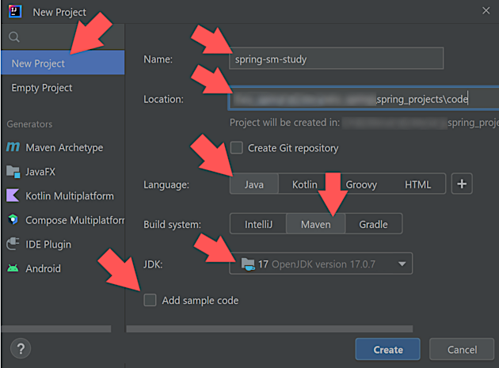
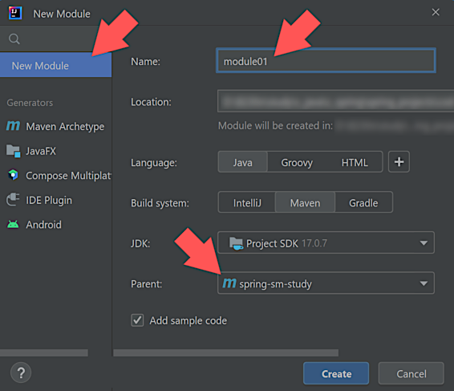
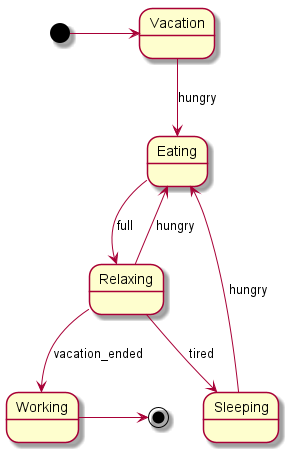

HomeIndex
HomeIndex GitHub
</>
GitHub
</>
Spring Statemachine
[spring_home]:
A multi-module project is going to be used for the study. The IntelliJ IDEA is used for the project and the one module initiation:
 
After some manual cleanup the following result is obtained:
Git commit:
ca30d155b6b0678def6f7e3cc309af0547f3e8b1module01 initiated
The following setting in the POM will carry out the assembled artifacts from our code base
(the variable TMP_MAVEN_BUILDS_DIR must be set in the system):
...
<build>
<directory>${TMP_MAVEN_BUILDS_DIR}${project.artifactId}</directory>
</build>
...The following command generates the dependency tree that shows that there are no dependencies used:
>mvn dependency:tree | find /v "[WARNING] Parameter 'localRepository'" > dependency_tree.txtFiltering is used to avoid some unrelated messages specific to the current local environment. It's very likely not required in other environments.
The result is here.
Running in the command line. In the current environment the default Java version is not 17 so we need some extra settings first:
>set JAVA_HOME=%JAVA_17_HOME%
>mvn clean package
>set PATH=%JAVA_HOME%\bin;%PATH%
>java -cp %TMP_MAVEN_BUILDS_DIR%module01\module01-1.0-SNAPSHOT.jar springsmstudy.Main
Hello world 01!Git commit:
080d533d22e57f2ff6dc16288098951839dc071asimple state machine investigated
Git commit:
d4ba2edeef626adc57e4163dfea7e3e0ca5831c1dependency tree regenerated
The following state machine is defined:
@Configuration
@EnableStateMachine
public class SimplestStateMachineConfiguration
extends StateMachineConfigurerAdapter<String, String> {
@Override
public void configure(StateMachineStateConfigurer<String, String> states)
throws Exception {
states.withStates()
.initial("Vacation")
.end("Working")
.states(Set.of("Eating", "Relaxing", "Sleeping"));
}
@Override
public void configure(StateMachineTransitionConfigurer<String, String> transitions)
throws Exception {
transitions.withExternal().source("Vacation").target("Eating").event("hungry")
.and().withExternal().source("Eating").target("Relaxing").event("full")
.and().withExternal().source("Relaxing").target("Eating").event("hungry")
.and().withExternal().source("Relaxing").target("Sleeping").event("tired")
.and().withExternal().source("Sleeping").target("Eating").event("hungry")
.and().withExternal().source("Relaxing").target("Working").event("vacation_ended");
}
}
The @EnableStateMachine annotation adds the StateMachine<?, ?> bean to the context. There's
the other annotation @EnableStateMachineFactory that is probably intended for the cases where
there are more than one state machines in the context. It's going to be discussed later.
In the main class we autowire the state machine, start it, send to it different events and watch the states to which it transitions after that. The results are printed in Markdown table format:
public void runDemo() throws Exception {
StringBuilder stringBuilder = new StringBuilder();
stringBuilder.append("| Event | State | Comment\n");
stringBuilder.append("| ----- | :-----: | -----\n");
stringBuilder.append("| | ").append(stateMachine.getState())
.append(" | SM is not started yet\n");
stateMachine.startReactively().subscribe();
sendEventAndPrintState(stringBuilder, null, "initial state");
sendEventAndPrintState(stringBuilder, "hungry", "");
sendEventAndPrintState(stringBuilder, "full", "");
sendEventAndPrintState(stringBuilder, "tired", "");
sendEventAndPrintState(stringBuilder, "vacation_ended", "no such transition");
sendEventAndPrintState(stringBuilder, "hungry", "");
sendEventAndPrintState(stringBuilder, "full", "");
sendEventAndPrintState(stringBuilder, "got_lazy", "no such event");
sendEventAndPrintState(stringBuilder, "vacation_ended", "");
System.out.println(stringBuilder);
Files.write(Paths.get("../output/simple_sm_output.txt"),
stringBuilder.toString().getBytes());
}Below is the investigation results and the state machine diagram:

| Event | State | Comment |
|---|---|---|
| null | SM is not started yet | |
| Vacation | initial state | |
| hungry | Eating | |
| full | Relaxing | |
| tired | Sleeping | |
| vacation_ended | Sleeping | no such transition |
| hungry | Eating | |
| full | Relaxing | |
| got_lazy | Relaxing | no such event |
| vacation_ended | Working |
The state machine diagram extraction is described here.
Several remarks need to be made here.
The stateMachine.startReactively() method is used
instead of the deprecated start() method. The stateMachine.sendEvent() method is also
deprecated so its reactive variation is used. This methods return a
reactor.core.publisher.Mono<T> class instance that is useful to be studied (as well as
the reactive programming topic) but not in the scope of this Spring Statemachine study course.
By default, if an event is sent that doesn't trigger any valid transition, the state machine ignores it without throwing an error. In our experiments above sometimes we sent such events and this behavior was confirmed. See the "vacation_ended" event in the "Sleeping" state and the "got_lazy" event (that is not defined in the SM at all) — the SM just stayed in the same state. This behavior may be redefined and that is discussed in the separate section.
By default, if an event is sent that doesn't trigger any valid transition, the state machine
ignores it without throwing an error. We can redefine how Spring Statemachine handles invalid
or undefined events using the StateMachineListener interface.
Following is a simple StateMachineListener implementation that does not change the SM behavior
but just prints the information:
Git commit:
56e33bcf8c375cf8b9c9dc3d9a59c6376bd42312simple SM listener added
Here's the listener class:
public class CustomStateMachineListener<S, E> extends StateMachineListenerAdapter<S, E> {
@Override
public void eventNotAccepted(Message<E> event) {
System.out.println("Event not accepted: " + event.getPayload());
}
@Override
public void stateChanged(State<S, E> from, State<S, E> to) {
System.out.println("State changed from " + getIdOrNull(from) + " to " + getIdOrNull(to));
}
private S getIdOrNull(State<S, E> state) {
return state == null ? null : state.getId();
}
}
Here's how it's added to the state machine:
@Configuration
@EnableStateMachine
public class SimplestStateMachineConfiguration
extends StateMachineConfigurerAdapter<String, String> {
...
@Override
public void configure(StateMachineConfigurationConfigurer<String, String> config)
throws Exception {
config.withConfiguration()
.listener(new CustomStateMachineListener<>());
}
}Here's the output it gives:
State changed from null to Vacation
State changed from Vacation to Eating
State changed from Eating to Relaxing
State changed from Relaxing to Sleeping
Event not accepted: vacation_ended
State changed from Sleeping to Eating
State changed from Eating to Relaxing
Event not accepted: got_lazy
State changed from Relaxing to WorkingNote
This is questionable to set the SM listener in the SM configuration. It looks logical as the listener belongs to the SM. On the other hand, the intrinsic SM behavior includes the states and transitions between them, while the SM listeners may interfere into this logic making the behavior more unpredictable and less maintainable.
In this example an alternative may be adding the listener in the Main class. As autowiring
is used there, we may use the @PostConstruct annotation:
@PostConstruct
public void init() {
stateMachine.addStateListener(new CustomStateMachineListener<>(stateMachine));
}In our example project the following dependency will need to be added:
<dependency>
<groupId>jakarta.annotation</groupId>
<artifactId>jakarta.annotation-api</artifactId>
<version>${jakarta-annotation-version}</version>
</dependency>In a Spring Boot application it will most likely already exist.